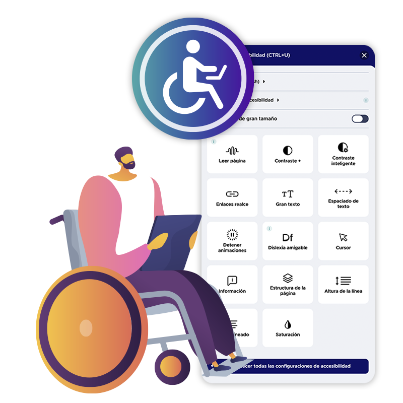

La accesibilidad web, un derecho para todos
Cómo los sitios web accesibles pueden ayudar a las personas con discapacidad visual a acceder a la información y los servicios en líneaAccesibilidad web
La accesibilidad web es la práctica de diseñar y desarrollar sitios web de manera que sean utilizables por todas las personas, incluyendo aquellas con discapacidad. Los sitios web accesibles deben ser legibles y navegables para las personas con discapacidad visual, así como para las personas con otras discapacidades, como la discapacidad auditiva, la discapacidad motora o la discapacidad cognitiva.
Discapacidad visual
La discapacidad visual es la pérdida parcial o total de la visión. Puede ser causada por una variedad de factores, como enfermedades congénitas, accidentes o el envejecimiento. Las personas con discapacidad visual pueden tener una visión muy reducida, o pueden ser completamente ciegas.
Importancia
La accesibilidad web es importante porque permite que todas las personas, independientemente de sus capacidades, puedan acceder a la información y los servicios en línea. Esto es un derecho humano fundamental y un beneficio para la sociedad en general.
¿Cómo hacer que un sitio web sea accesible para personas con discapacidad visual?
Hay una serie de cosas que los creadores de sitios web pueden hacer para hacerlos más accesibles para las personas con discapacidad visual. Algunas de estas cosas incluyen:
Usar texto alternativo para las imágenes y otros elementos visuales
El texto alternativo es una descripción del contenido visual de una página web.
Usar un contraste de colores adecuado.
El contraste de colores es importante para que las personas con discapacidad visual puedan leer el texto y ver los elementos visuales de una página web.
Usar un diseño simple y ordenado
Un diseño simple y ordenado hace que sea más fácil para las personas con discapacidad visual navegar por un sitio web.
Proporcionar etiquetas para los elementos de navegación
Las etiquetas son descripciones de los elementos de navegación de una página web.
Opiniones de influyentes en tecnología
En el ámbito de la tecnología, la accesibilidad web se ha convertido en un tema crucial para garantizar que todos, independientemente de sus capacidades, tengan igualdad de acceso a la información en la World Wide Web. Destacadas figuras como Tim Berners-Lee, Vint Cerf y el A11Y Project han expresado sus opiniones sobre la importancia de diseñar y desarrollar tecnologías de manera inclusiva. Sus declaraciones reflejan la necesidad de considerar la diversidad de usuarios desde el inicio del proceso de desarrollo, no solo como una característica adicional, sino como un enfoque fundamental.
Tim Berners-Lee
La accesibilidad web es esencial para garantizar que la información en la World Wide Web sea accesible a todos, independientemente de sus capacidades.
Tim Berners-Lee es el inventor de la World Wide Web y defiende la equidad en el acceso a la información digital.
Vint Cerf
La accesibilidad web no es solo un requisito técnico, es un imperativo ético para asegurar que la web sea inclusiva y beneficiosa para todas las personas.
Vint Cerf es uno de los "padres de internet" y aboga por la ética en la tecnología.
A11Y Project
La accesibilidad no es solo una característica, es un enfoque desde el principio del diseño y desarrollo para satisfacer las diversas necesidades de los usuarios.
A11Y Project es un grupo comprometido con la accesibilidad y aboga por la consideración de las necesidades de todos los usuarios desde el inicio del proceso de desarrollo.
Userway
Userway es una herramienta de accesibilidad web que ayuda a los creadores de sitios web a hacer que sus sitios sean más accesibles para las personas con discapacidades.
